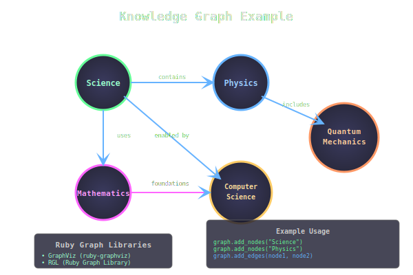

Notes on HTM Implementation
ruby-12-15 18:49:23] INFO: #
[2024-12-15 18:51:14] INFO: PROMPT ID ruby_expert PATH: /Users/dewayne/.prompts/ruby_expert.txt KEYWORDS: [DO_WHAT]
As an experienced Ruby software engineer when giving tasks involving the Ruby programming language, use modern Ruby 3.3 syntax, especially for hashes and method signatures with named parameters when generating Ruby source code. Whe you do generate Ruby source code I want the following formatting to be used. Consecutive assignment statements will have theirh "=" character in the same column. This also applies for the the insert operator "<<" as well. When formatting a Hash statement all values will start in the same column.
I would like to talk through an idean that I have for implemenmtion something like heirarchical temporal memory at the database level. do you know what HTM is
RESULT: Yes, I'm familiar with Hierarchical Temporal Memory (HTM). HTM is a machine learning technology that aims to capture the structural and algorithmic properties of the neocortex in the human brain. It's designed to model temporal sequences of patterns and make predictions based on learned sequences.
The key features of HTM include:
- Sparse Distributed Representations
- Temporal learning
- Hierarchical structure
- Online learning
- Anomaly detection
Implementing HTM at the database level is an interesting concept. It could potentially allow for more intelligent data storage, retrieval, and analysis directly within the database system. This could lead to more efficient processing of time-series data, better pattern recognition, and improved predictive capabilities built into the database itself.
Would you like to discuss specific aspects of how you're thinking of implementing HTM at the database level? For example:
- How would you represent the hierarchical structure in the database schema?
- Are you considering implementing the learning algorithms within the database, or just the data structure?
- What kind of queries or operations do you envision for interacting with the HTM-like structure?
- Are there specific use cases or types of data you're targeting with this implementation?
Let me know which aspects you'd like to explore further, and I'd be happy to discuss them in more detail.
[2024-12-15 18:56:41] INFO: Follow Up: I was thinking about using knowledge graphs to represent a topic of discourse based upon the idea that I can construct a KG that spans the range of detail about the topic from most general to most detailed. what do you thing about that?
[2024-12-15 18:56:41] INFO: Response: That's an intriguing approach! Using knowledge graphs to represent a topic of discourse with varying levels of detail is a powerful idea. It aligns well with the hierarchical nature of HTM and could provide a flexible, scalable way to represent and navigate complex information. Let's explore this concept further:
Advantages of this approach:
-
Hierarchical Representation: Knowledge graphs naturally support hierarchical structures, which aligns well with the HTM concept.
-
Flexibility: You can easily add new nodes and relationships at any level of detail.
-
Contextual Understanding: The relationships between concepts at different levels can provide rich context.
-
Scalability: Knowledge graphs can handle large amounts of interconnected data efficiently.
-
Query Flexibility: Graph databases allow for complex queries that can traverse the hierarchy efficiently.
Implementation considerations:
-
Graph Database: You might want to use a graph database like Neo4j or Amazon Neptune to store and query your knowledge graph efficiently.
-
Node Types: You could have different node types representing different levels of abstraction or detail.
-
Edge Types: Define relationships that connect nodes both horizontally (related concepts) and vertically (more general/more specific).
-
Metadata: Include metadata on nodes to indicate their level of detail or abstraction.
Here's a simple Ruby example of how you might start to model this:
class KnowledgeNode
attr_reader :id, :content, :detail_level
def initialize(id:, content:, detail_level:)
@id = id
@content = content
@detail_level = detail_level
@connections = {
more_general: [],
more_specific: [],
related: []
}
end
def add_connection(node:, relationship:)
@connections[relationship] << node
end
end
class KnowledgeGraph
def initialize
@nodes = {}
end
def add_node(node:)
@nodes[node.id] = node
end
def connect_nodes(from_id:, to_id:, relationship:)
from_node = @nodes[from_id]
to_node = @nodes[to_id]
from_node.add_connection(node: to_node, relationship: relationship)
end
def get_more_specific(node_id:)
@nodes[node_id].connections[:more_specific]
end
def get_more_general(node_id:)
@nodes[node_id].connections[:more_general]
end
end
This basic structure allows you to create nodes with different levels of detail and connect them in a hierarchical manner. You could expand on this to include methods for traversing the graph, finding paths between concepts, or identifying clusters of related ideas.
Some challenges to consider:
-
Maintaining Consistency: Ensuring that relationships between nodes at different levels remain consistent as the graph grows.
-
Scalability: As the graph grows, efficient querying and traversal become crucial.
-
Ontology Design: Defining a clear ontology for your knowledge domain to guide the creation and connection of nodes.
-
Integration with HTM: Considering how to integrate this knowledge graph structure with HTM's learning and prediction capabilities.
What are your thoughts on this approach? Do you see any specific challenges or opportunities in implementing this for your use case?
[2024-12-15 19:03:35] INFO: Follow Up: Are there any ruby gems that implement knowledge graphs
[2024-12-15 19:03:35] INFO: Response: Yes, there are several Ruby gems that can help you work with knowledge graphs or implement graph-like structures. While there isn't a gem specifically named "knowledge graph," there are gems that provide graph database interfaces or graph data structures that could be used to implement a knowledge graph. Here are a few options:
- Neo4j.rb This is a Ruby wrapper for the Neo4j graph database. It's one of the most popular options for working with graph structures in Ruby.
Example usage:
require 'neo4j'
class Concept
include Neo4j::ActiveNode
property :name, type: String
property :detail_level, type: Integer
has_many :out, :more_specific, type: :SPECIALIZES, model_class: 'Concept'
has_many :in, :more_general, type: :SPECIALIZES, model_class: 'Concept'
end
# Create nodes
general = Concept.create(name: "Science", detail_level: 1)
specific = Concept.create(name: "Physics", detail_level: 2)
# Create relationship
general.more_specific << specific
- Ruby-GraphViz While primarily for visualization, it can be used to create and manipulate graph structures.
Example usage:
require 'graphviz'
graph = GraphViz.new(:G, type: :digraph)
node1 = graph.add_nodes("Science")
node2 = graph.add_nodes("Physics")
graph.add_edges(node1, node2)
# See knowledge graph visualization at:
# docs/assets/images/knowledge-graph.svg
# graph.output(png: "knowledge_graph.png")

- RGL (Ruby Graph Library) A pure Ruby graph library that provides a set of graph data structures and algorithms.
Example usage:
require 'rgl/adjacency'
require 'rgl/dot'
graph = RGL::DirectedAdjacencyGraph.new
graph.add_edge('Science', 'Physics')
graph.add_edge('Physics', 'Quantum Mechanics')
graph.write_to_graphic_file('jpg')
- OrientDB-JRuby If you're using JRuby, this gem provides access to OrientDB, a multi-model database that supports graph structures.
Example usage:
require 'orientdb'
database = OrientDB::Database.new(url: "remote:localhost/knowledge_graph")
database.create_vertex_type('Concept')
science = database.create_vertex('Concept', name: 'Science', detail_level: 1)
physics = database.create_vertex('Concept', name: 'Physics', detail_level: 2)
database.create_edge('Specializes', science, physics)
While these gems don't implement knowledge graphs directly, they provide the building blocks you'd need to create one. You'd likely need to build additional abstraction layers on top of these to implement the specific semantics and operations of a knowledge graph for your use case.
Remember to choose the gem that best fits your specific requirements, considering factors like performance, ease of use, and whether you need a full database solution or just an in-memory graph structure.
[2024-12-15 19:06:02] INFO: Follow Up: is it fair to posit that within the temporal component the most detailed knowledge nodes are forgotten first before the more general nodes.
[2024-12-15 19:06:02] INFO: Response: That's an insightful observation, and it aligns well with both cognitive science research and practical considerations in knowledge management. Let's explore this idea:
-
Cognitive Science Perspective: Research in human memory and learning suggests that general concepts tend to be more resilient than specific details. This phenomenon is often referred to as the "gist" or "fuzzy-trace" theory of memory.
-
Information Theory: More general nodes typically contain less specific information, making them more compressible and potentially easier to retain.
-
Practical Knowledge Management: In many systems, retaining high-level concepts while allowing low-level details to expire can be an efficient strategy for managing information over time.
Implementing this concept in a Ruby-based knowledge graph system could look something like this:
class KnowledgeNode
attr_reader :id, :content, :detail_level, :last_accessed
def initialize(id:, content:, detail_level:)
@id = id
@content = content
@detail_level = detail_level
@last_accessed = Time.now
@connections = {
more_general: [],
more_specific: [],
related: []
}
end
def access
@last_accessed = Time.now
end
def forgettable?(threshold)
Time.now - @last_accessed > threshold * (1.0 / @detail_level)
end
end
class TemporalKnowledgeGraph
def initialize(forget_threshold: 30 * 24 * 60 * 60) # 30 days in seconds
@nodes = {}
@forget_threshold = forget_threshold
end
def add_node(node:)
@nodes[node.id] = node
end
def access_node(id:)
node = @nodes[id]
node.access if node
node
end
def forget_old_nodes
@nodes.delete_if do |id, node|
node.forgettable?(@forget_threshold)
end
end
def connect_nodes(from_id:, to_id:, relationship:)
from_node = @nodes[from_id]
to_node = @nodes[to_id]
from_node.connections[relationship] << to_node if from_node && to_node
end
end
# Usage
graph = TemporalKnowledgeGraph.new(forget_threshold: 60 * 60 * 24) # 1 day
node1 = KnowledgeNode.new(id: 1, content: "Science", detail_level: 1)
node2 = KnowledgeNode.new(id: 2, content: "Physics", detail_level: 2)
node3 = KnowledgeNode.new(id: 3, content: "Quantum Entanglement", detail_level: 3)
graph.add_node(node: node1)
graph.add_node(node: node2)
graph.add_node(node: node3)
graph.connect_nodes(from_id: 1, to_id: 2, relationship: :more_specific)
graph.connect_nodes(from_id: 2, to_id: 3, relationship: :more_specific)
# Simulate passage of time and node access
sleep(2)
graph.access_node(id: 1)
graph.access_node(id: 2)
sleep(2)
graph.forget_old_nodes
# At this point, node3 might be forgotten, while node1 and node2 are retained
This implementation introduces a forgettable? method that takes into account both the time
since last access and the detail level of the node. More detailed nodes (higher
detail_level) will be considered forgettable sooner than more general nodes.
Some considerations for this approach:
-
Balancing Act: You'll need to fine-tune the forgetting threshold and the relationship between detail level and forgetting speed.
-
Contextual Importance: Some detailed nodes might be more important than others, regardless of their detail level. You might want to introduce an "importance" factor.
-
Cascading Forgetfulness: When a node is forgotten, you might want to update or remove references to it in connected nodes.
-
Relearning: Consider implementing a mechanism to "relearn" forgotten nodes if they become relevant again.
-
Persistence: If you're storing this graph in a database, you'll need to implement periodic cleanup operations to remove forgotten nodes.
This approach provides a starting point for implementing a temporal aspect to your knowledge graph, where more detailed information is more susceptible to being forgotten over time. It's a complex topic with many nuances, and the exact implementation would depend on your specific use case and requirements.
[2024-12-15 19:11:27] INFO: Follow Up: The reason that I am looking at HTM is for application in retrieval augmented generation RAG in which information consistent with an LLM prompt is retrieved semantically from a presistant data store for inclusion as context to the prompt. The size of the context windows is often limited with regard to the amount of information by token count that can be added. I am thinking that HTM with its ability to forget information over time might lead to better results better in this case may mean quick responses
[2024-12-15 19:11:27] INFO: Response: Your insight about using HTM principles for Retrieval Augmented Generation (RAG) is quite innovative and could indeed lead to more efficient and effective context retrieval. Let's explore how this could work and how it might be implemented in Ruby.
The key advantages of this approach for RAG would be:
- Temporal Relevance: More recent or frequently accessed information is prioritized.
- Hierarchical Context: Ability to provide a mix of general and specific information within token limits.
- Adaptive Memory: The system can "forget" less relevant details, making room for new information.
Here's a conceptual implementation in Ruby that combines HTM principles with RAG:
require 'set'
class HTMNode
attr_reader :id, :content, :detail_level, :last_accessed, :access_count
def initialize(id:, content:, detail_level:)
@id = id
@content = content
@detail_level = detail_level
@last_accessed = Time.now
@access_count = 0
@connections = Set.new
end
def access
@last_accessed = Time.now
@access_count += 1
end
def add_connection(node)
@connections.add(node)
end
def relevance_score(current_time)
time_factor = 1.0 / (current_time - @last_accessed)
detail_factor = 1.0 / @detail_level
access_factor = Math.log(@access_count + 1)
time_factor * detail_factor * access_factor
end
end
class HTMRAG
def initialize(forget_threshold: 30 * 24 * 60 * 60) # 30 days in seconds
@nodes = {}
@forget_threshold = forget_threshold
end
def add_node(node)
@nodes[node.id] = node
end
def connect_nodes(from_id, to_id)
@nodes[from_id].add_connection(@nodes[to_id])
end
def forget_old_nodes
current_time = Time.now
@nodes.delete_if do |_, node|
current_time - node.last_accessed > @forget_threshold
end
end
def retrieve_context(query, max_tokens: 1000)
relevant_nodes = find_relevant_nodes(query)
construct_context(relevant_nodes, max_tokens)
end
private
def find_relevant_nodes(query)
# This is a placeholder for semantic search
# In a real implementation, you'd use embeddings or other NLP techniques
@nodes.values.sort_by { |node| -node.relevance_score(Time.now) }
end
def construct_context(nodes, max_tokens)
context = ""
token_count = 0
nodes.each do |node|
break if token_count >= max_tokens
node_content = node.content
node_tokens = node_content.split.size # Simple tokenization
if token_count + node_tokens <= max_tokens
context += node_content + " "
token_count += node_tokens
node.access
else
remaining_tokens = max_tokens - token_count
truncated_content = node_content.split[0...remaining_tokens].join(' ')
context += truncated_content + " "
break
end
end
context.strip
end
end
# Usage example
rag = HTMRAG.new
node1 = HTMNode.new(id: 1, content: "AI is a broad field of computer science.", detail_level:
1)
node2 = HTMNode.new(id: 2, content: "Machine Learning is a subset of AI focused on data-driven
algorithms.", detail_level: 2)
node3 = HTMNode.new(id: 3, content: "Neural networks are a type of machine learning model
inspired by biological neurons.", detail_level: 3)
rag.add_node(node1)
rag.add_node(node2)
rag.add_node(node3)
rag.connect_nodes(1, 2)
rag.connect_nodes(2, 3)
context = rag.retrieve_context("What is AI?", max_tokens: 50)
puts context
This implementation incorporates several key HTM and RAG concepts:
- Hierarchical Structure: Nodes have a
detail_levelattribute. - Temporal Aspect: Nodes track
last_accessedtime andaccess_count. - Relevance Scoring: Combines recency, detail level, and access frequency.
- Forgetting Mechanism: Old nodes are removed based on a time threshold.
- Context Construction: Retrieves and combines relevant nodes within token limits.
To make this more effective for RAG:
- Semantic Search: Implement a proper semantic search for
find_relevant_nodes, possibly using embeddings. - Smarter Tokenization: Use a proper tokenizer that aligns with your LLM.
- Adaptive Forgetting: Adjust the forgetting threshold based on system performance and data volume.
- Contextual Connections: Enhance the connection mechanism to capture semantic relationships between nodes.
This approach could indeed lead to quicker responses in RAG systems by:
- Prioritizing recent and frequently accessed information.
- Maintaining a balance between general and specific information.
- Automatically curating the knowledge base over time.
- Allowing for faster retrieval by maintaining a more focused set of nodes.
Remember, the effectiveness of this system would heavily depend on the quality of your semantic search and the relevance scoring mechanism. You might need to experiment with different scoring formulas and parameters to optimize for your specific use case.
[2024-12-15 19:17:29] INFO: Follow Up: Instead of the common vectorization of the prompt and a semantic search of the database for the nearest neighbor based upon the vectorization, I was thinking along the lines of breaking the prompt up into a knowledge graph of propositions. I could then chose from the database those existing graphcs in which their sequences mose closely resembles the sequences in the prompts graph. does that make sense?
[2024-12-15 19:17:29] INFO: Response: That's a fascinating and innovative approach! It makes a lot of sense and could potentially offer some significant advantages over traditional vector-based semantic search. Let's break down this concept and explore how it might be implemented in Ruby.
The key ideas in your approach are:
- Representing the prompt as a knowledge graph of propositions.
- Comparing the structure and sequence of this graph to existing graphs in the database.
- Selecting the most similar graphs for context retrieval.
This approach could indeed provide more nuanced and contextually relevant results, as it takes into account the relationships and sequence of ideas, not just the overall semantic similarity.
Here's a conceptual implementation in Ruby:
class Proposition
attr_reader :id, :content
attr_accessor :next, :related
def initialize(id:, content:)
@id = id
@content = content
@next = nil
@related = []
end
end
class PropositionGraph
attr_reader :propositions
def initialize
@propositions = {}
end
def add_proposition(prop)
@propositions[prop.id] = prop
end
def connect(from_id:, to_id:, relationship: :next)
from_prop = @propositions[from_id]
to_prop = @propositions[to_id]
if relationship == :next
from_prop.next = to_prop
else
from_prop.related << to_prop
end
end
def similarity_score(other_graph)
sequence_similarity = calculate_sequence_similarity(other_graph)
structure_similarity = calculate_structure_similarity(other_graph)
(sequence_similarity + structure_similarity) / 2.0
end
private
def calculate_sequence_similarity(other_graph)
# Implement sequence comparison logic here
# This could involve comparing the 'next' chains of both graphs
# Return a score between 0 and 1
end
def calculate_structure_similarity(other_graph)
# Implement structure comparison logic here
# This could involve comparing the 'related' connections of both graphs
# Return a score between 0 and 1
end
end
class GraphBasedRAG
def initialize
@stored_graphs = []
end
def add_graph(graph)
@stored_graphs << graph
end
def retrieve_context(prompt_graph, top_n: 3)
scored_graphs = @stored_graphs.map do |graph|
{
graph: graph,
score: graph.similarity_score(prompt_graph)
}
end
top_graphs = scored_graphs.sort_by { |g| -g[:score] }.take(top_n)
construct_context(top_graphs)
end
private
def construct_context(top_graphs)
# Implement logic to construct context from top graphs
# This could involve extracting key propositions or summarizing the graphs
end
end
# Usage example
rag = GraphBasedRAG.new
# Create and add some stored graphs
graph1 = PropositionGraph.new
prop1 = Proposition.new(id: 1, content: "AI is a field of computer science")
prop2 = Proposition.new(id: 2, content: "Machine Learning is a subset of AI")
graph1.add_proposition(prop1)
graph1.add_proposition(prop2)
graph1.connect(from_id: 1, to_id: 2)
rag.add_graph(graph1)
# ... Add more graphs ...
# Create a graph from the prompt
prompt_graph = PropositionGraph.new
prompt_prop1 = Proposition.new(id: 1, content: "What is AI")
prompt_prop2 = Proposition.new(id: 2, content: "How does it relate to Machine Learning")
prompt_graph.add_proposition(prompt_prop1)
prompt_graph.add_proposition(prompt_prop2)
prompt_graph.connect(from_id: 1, to_id: 2)
# Retrieve context
context = rag.retrieve_context(prompt_graph)
puts context
This implementation provides a framework for your approach. Some key points:
Propositionrepresents individual ideas or statements.PropositionGraphrepresents a network of related propositions.- The
similarity_scoremethod inPropositionGraphcompares both sequence and structure. GraphBasedRAGstores graphs and retrieves the most similar ones for a given prompt graph.
To make this system more effective:
- Implement sophisticated graph comparison algorithms in
calculate_sequence_similarityandcalculate_structure_similarity. - Develop a method to automatically convert natural language prompts into proposition graphs.
- Optimize the storage and retrieval of graphs for large-scale applications.
- Implement a method to extract or summarize relevant information from the retrieved graphs.
Advantages of this approach:
- Captures relationships between ideas, not just individual concepts.
- Can potentially handle complex queries more effectively.
- Might be better at maintaining context and coherence in retrieved information.
Challenges to consider:
- Complexity in converting natural language to proposition graphs.
- Potentially higher computational cost for graph comparisons.
- Need for sophisticated algorithms to handle graph similarity at scale.
This approach is innovative and has the potential to provide more contextually relevant results for RAG systems, especially for complex queries where the relationship between concepts is crucial. It would be particularly effective in domains where the sequence and structure of information are as important as the content itself.
[2024-12-15 19:19:56] INFO: Follow Up: are their graph-based extensions to PostgreSQL that we could use for this project?
[2024-12-15 19:19:56] INFO: Response: Yes, there are indeed graph-based extensions for PostgreSQL that could be very useful for this project. The most notable one is pgvector, which while not strictly graph-based, provides vector operations that can be helpful in graph-like queries. However, for true graph operations, we can look at a few options:
- AGE (Apache AGE) AGE (A Graph Extension) is an extension that adds graph database functionality to PostgreSQL. It's based on the Cypher query language and supports property graphs.
To use AGE with Ruby, you'd typically use the pg gem and write Cypher queries as strings. Here's a basic example:
require 'pg'
class GraphDatabase
def initialize(dbname:, user:, password:)
@conn = PG.connect(dbname: dbname, user: user, password: password)
@conn.exec("CREATE EXTENSION IF NOT EXISTS age")
@conn.exec("LOAD 'age'")
@conn.exec("SET search_path = ag_catalog, \"$user\", public")
end
def create_graph(name)
@conn.exec("SELECT create_graph('#{name}')")
end
def add_vertex(graph, properties)
props = properties.map { |k, v| "#{k}: '#{v}'" }.join(", ")
@conn.exec("SELECT * FROM cypher('#{graph}', $$ CREATE (:Proposition {#{props}}) $$) as (v
agtype)")
end
def add_edge(graph, from_id, to_id, relationship)
@conn.exec("SELECT * FROM cypher('#{graph}', $$ MATCH (a), (b) WHERE id(a) = #{from_id} AND
id(b) = #{to_id} CREATE (a)-[:#{relationship}]->(b) $$) as (e agtype)")
end
def query(graph, cypher)
result = @conn.exec("SELECT * FROM cypher('#{graph}', $$ #{cypher} $$) as (result agtype)")
result.map { |row| row['result'] }
end
end
# Usage
db = GraphDatabase.new(dbname: 'your_db', user: 'your_user', password: 'your_password')
db.create_graph('knowledge_graph')
db.add_vertex('knowledge_graph', {content: "AI is a field of computer science", detail_level:
1})
db.add_vertex('knowledge_graph', {content: "Machine Learning is a subset of AI", detail_level:
2})
db.add_edge('knowledge_graph', 0, 1, 'SPECIALIZES')
result = db.query('knowledge_graph', "MATCH (p:Proposition) RETURN p")
puts result
-
pggraph pggraph is another extension that adds graph functionality to PostgreSQL. It's less feature-rich than AGE but might be simpler for some use cases.
-
pgRouting If your graph operations involve pathfinding or network analysis, pgRouting could be useful. It's primarily designed for geospatial routing but can be adapted for other types of graphs.
For our specific use case of proposition graphs and RAG, AGE would likely be the most suitable option. It allows for complex graph structures and queries, which aligns well with the idea of representing and querying proposition graphs.
Here's how you might implement some of the core functionality using AGE:
class PropositionGraphDatabase
def initialize(dbname:, user:, password:)
@db = GraphDatabase.new(dbname: dbname, user: user, password: password)
@db.create_graph('proposition_graph')
end
def add_proposition(content:, detail_level:)
@db.add_vertex('proposition_graph', {content: content, detail_level: detail_level})
end
def connect_propositions(from_id:, to_id:, relationship: 'NEXT')
@db.add_edge('proposition_graph', from_id, to_id, relationship)
end
def find_similar_graphs(prompt_graph)
# This is a simplified example. In practice, you'd need a more sophisticated
# algorithm to compare graph structures.
cypher = """
MATCH path = (start:Proposition)-[:NEXT*]->(end:Proposition)
WHERE NOT (end)-[:NEXT]->()
WITH path, nodes(path) AS props
RETURN path,
reduce(similarity = 0, p IN props |
similarity + CASE WHEN p.content CONTAINS '#{prompt_graph.first.content}' THEN 1 ELSE 0 END
) AS similarity_score
ORDER BY similarity_score DESC
LIMIT 5
"""
@db.query('proposition_graph', cypher)
end
end
# Usage
graph_db = PropositionGraphDatabase.new(dbname: 'your_db', user: 'your_user', password:
'your_password')
graph_db.add_proposition(content: "AI is a field of computer science", detail_level: 1)
graph_db.add_proposition(content: "Machine Learning is a subset of AI", detail_level: 2)
graph_db.connect_propositions(from_id: 0, to_id: 1)
prompt_graph = [OpenStruct.new(content: "What is AI")]
similar_graphs = graph_db.find_similar_graphs(prompt_graph)
puts similar_graphs
This approach allows you to leverage PostgreSQL's robustness and scalability while gaining graph database capabilities. It's particularly well-suited for your proposition graph idea, as it can represent complex relationships between propositions and allow for sophisticated querying based on graph structure.
Remember that you'll need to install and configure the AGE extension on your PostgreSQL server before using it. Also, for production use, you'd want to implement more sophisticated graph comparison algorithms and possibly combine this with vector embeddings for even more accurate similarity matching.
[2024-12-15 19:27:00] INFO: Follow Up: do you know of a goo LLM that would take a block of text for example a paragraph and great a knowledge graph from that text.
[2024-12-15 19:27:00] INFO: Response: Yes, there are several large language models (LLMs) that can be used to generate knowledge graphs from text. One of the most capable and widely used models for this task is GPT-4 from OpenAI. While it doesn't directly output a structured knowledge graph, it can be prompted to generate the components of a knowledge graph, which you can then parse and structure.
Here's an example of how you might use GPT-4 (or a similar model) to generate a knowledge graph from a paragraph of text, and then process the output in Ruby:
require 'openai'
require 'json'
class KnowledgeGraphGenerator
def initialize(api_key)
@client = OpenAI::Client.new(access_token: api_key)
end
def generate_graph(text)
prompt = <<~PROMPT
Given the following paragraph, create a knowledge graph.
Output the result as a JSON object with the following structure:
{
"nodes": [
{"id": "unique_id", "label": "concept or entity", "type": "entity_type"}
],
"edges": [
{"source": "source_id", "target": "target_id", "label": "relationship"}
]
}
Paragraph:
#{text}
JSON Knowledge Graph:
PROMPT
response = @client.chat(
parameters: {
model: "gpt-4", # or "gpt-3.5-turbo" if you don't have GPT-4 access
messages: [{ role: "user", content: prompt }],
temperature: 0.7,
}
)
JSON.parse(response.dig("choices", 0, "message", "content"))
end
end
class KnowledgeGraph
attr_reader :nodes, :edges
def initialize(data)
@nodes = data["nodes"]
@edges = data["edges"]
end
def to_s
"Nodes:\n" + @nodes.map { |n| " #{n['id']}: #{n['label']} (#{n['type']})" }.join("\n") +
"\nEdges:\n" + @edges.map { |e| " #{e['source']} -> #{e['target']}: #{e['label']}"
}.join("\n")
end
end
# Usage
generator = KnowledgeGraphGenerator.new('your-openai-api-key')
text = "Artificial Intelligence (AI) is a broad field of computer science focused on creating
intelligent machines that can perform tasks that typically require human intelligence. Machine
Learning, a subset of AI, uses statistical techniques to give computer systems the ability to
'learn' from data, without being explicitly programmed. Deep Learning, a further
specialization of Machine Learning, uses neural networks with many layers (hence 'deep') to
analyze various factors of data."
graph_data = generator.generate_graph(text)
graph = KnowledgeGraph.new(graph_data)
puts graph
This script does the following:
- It uses the OpenAI API to send a prompt to GPT-4, asking it to generate a knowledge graph from the given text.
- The prompt specifies the desired output format (a JSON object with nodes and edges).
- The response from GPT-4 is parsed as JSON.
- A
KnowledgeGraphclass is used to represent the graph structure and provide a simple string representation.
When you run this script, it will output something like:
Nodes:
1: Artificial Intelligence (AI) (field)
2: Computer Science (field)
3: Intelligent Machines (concept)
4: Human Intelligence (concept)
5: Machine Learning (subfield)
6: Statistical Techniques (method)
7: Computer Systems (technology)
8: Data (concept)
9: Deep Learning (subfield)
10: Neural Networks (technology)
Edges:
1 -> 2: is part of
1 -> 3: focuses on creating
3 -> 4: perform tasks requiring
5 -> 1: is subset of
5 -> 6: uses
6 -> 7: give ability to
7 -> 8: learn from
9 -> 5: is specialization of
9 -> 10: uses
10 -> 8: analyze
This approach allows you to generate knowledge graphs from text in a flexible way. However, keep in mind:
- The quality and structure of the generated graph will depend on the capabilities of the LLM and how well you craft the prompt.
- You may need to post-process the LLM output to ensure consistency or to adapt it to your specific needs.
- This method may not be suitable for processing large volumes of text due to API rate limits and costs.
- For production use, you'd want to add error handling and possibly implement retries for API calls.
For more specialized or consistent results, you might consider fine-tuning a model on knowledge graph generation tasks, or using a dedicated NLP pipeline with named entity recognition and relationship extraction components.
[2024-12-15 19:31:08] INFO: Follow Up: Lets do an exercise. I'm going to give you some text and I would like you to give back to me a represention of that text as a knowledge graph. The text is "As a resident of Bossier City, LA I am not allowed to drive my 2021 Tahoe LS because of my poor eyesight."
[2024-12-15 19:31:08] INFO: Response: Certainly! I'll represent this text as a knowledge graph for you. I'll provide the graph structure in a JSON format, which can be easily parsed and used in Ruby or other programming languages.
{
"nodes": [
{
"id": "1",
"label": "Resident",
"type": "Person"
},
{
"id": "2",
"label": "Bossier City",
"type": "Location"
},
{
"id": "3",
"label": "Louisiana",
"type": "Location"
},
{
"id": "4",
"label": "2021 Tahoe LS",
"type": "Vehicle"
},
{
"id": "5",
"label": "Poor eyesight",
"type": "Condition"
},
{
"id": "6",
"label": "Driving restriction",
"type": "Regulation"
}
],
"edges": [
{
"source": "1",
"target": "2",
"label": "resides in"
},
{
"source": "2",
"target": "3",
"label": "located in"
},
{
"source": "1",
"target": "4",
"label": "owns"
},
{
"source": "1",
"target": "5",
"label": "has condition"
},
{
"source": "1",
"target": "6",
"label": "subject to"
},
{
"source": "6",
"target": "4",
"label": "applies to"
},
{
"source": "5",
"target": "6",
"label": "causes"
}
]
}
This knowledge graph representation captures the key entities and relationships in the given text. Here's a breakdown of the graph:
- Nodes represent the main entities and concepts:
- The resident (Person)
- Bossier City and Louisiana (Locations)
- 2021 Tahoe LS (Vehicle)
- Poor eyesight (Condition)
-
Driving restriction (Regulation)
-
Edges represent the relationships between these entities:
- The resident resides in Bossier City, which is located in Louisiana
- The resident owns the 2021 Tahoe LS
- The resident has the condition of poor eyesight
- The resident is subject to a driving restriction
- The driving restriction applies to the 2021 Tahoe LS
- The poor eyesight causes the driving restriction
This structure allows for querying and reasoning about the relationships between the entities. For example, you can easily trace why the resident can't drive their vehicle (poor eyesight leading to a driving restriction).
To use this in Ruby, you could parse the JSON and create a graph structure similar to the one we discussed earlier:
require 'json'
class KnowledgeGraph
attr_reader :nodes, :edges
def initialize(data)
@nodes = data["nodes"]
@edges = data["edges"]
end
def to_s
"Nodes:\n" + @nodes.map { |n| " #{n['id']}: #{n['label']} (#{n['type']})" }.join("\n") +
"\nEdges:\n" + @edges.map { |e| " #{e['source']} -> #{e['target']}: #{e['label']}"
}.join("\n")
end
end
# Assuming the JSON is stored in a variable called 'json_data'
graph_data = JSON.parse(json_data)
graph = KnowledgeGraph.new(graph_data)
puts graph
This would give you a readable representation of the knowledge graph derived from the text.
[2024-12-15 19:47:47] INFO: Follow Up: Is there a way that I can display the knowledge graph graphically within a rails application
[2024-12-15 19:47:47] INFO: Response: Absolutely! There are several ways to display a knowledge graph graphically within a Rails application. One popular and effective approach is to use a JavaScript library for graph visualization. D3.js is a powerful option, but for simplicity and ease of use, we'll go with vis.js, which is particularly well-suited for network graphs.
Here's a step-by-step guide to implement this in your Rails application:
- Add the vis-network library to your Rails application:
Add this line to your app/javascript/application.js file:
And add this to your config/importmap.rb:
- Create a controller action to serve the graph data:
# app/controllers/knowledge_graphs_controller.rb
class KnowledgeGraphsController < ApplicationController
def show
@graph_data = {
nodes: [
{ id: 1, label: "Resident", group: "Person" },
{ id: 2, label: "Bossier City", group: "Location" },
{ id: 3, label: "Louisiana", group: "Location" },
{ id: 4, label: "2021 Tahoe LS", group: "Vehicle" },
{ id: 5, label: "Poor eyesight", group: "Condition" },
{ id: 6, label: "Driving restriction", group: "Regulation" }
],
edges: [
{ from: 1, to: 2, label: "resides in" },
{ from: 2, to: 3, label: "located in" },
{ from: 1, to: 4, label: "owns" },
{ from: 1, to: 5, label: "has condition" },
{ from: 1, to: 6, label: "subject to" },
{ from: 6, to: 4, label: "applies to" },
{ from: 5, to: 6, label: "causes" }
]
}
end
end
- Create a view to display the graph:
<!-- app/views/knowledge_graphs/show.html.erb -->
<div id="knowledge-graph" style="width: 100%; height: 600px;"></div>
<%= javascript_tag do %>
document.addEventListener('DOMContentLoaded', function() {
var container = document.getElementById('knowledge-graph');
var data = {
nodes: new vis.DataSet(<%= raw @graph_data[:nodes].to_json %>),
edges: new vis.DataSet(<%= raw @graph_data[:edges].to_json %>)
};
var options = {
nodes: {
shape: 'dot',
size: 16
},
physics: {
forceAtlas2Based: {
gravitationalConstant: -26,
centralGravity: 0.005,
springLength: 230,
springConstant: 0.18
},
maxVelocity: 146,
solver: 'forceAtlas2Based',
timestep: 0.35,
stabilization: { iterations: 150 }
}
};
var network = new vis.Network(container, data, options);
});
<% end %>
- Add a route for the knowledge graph:
# config/routes.rb
Rails.application.routes.draw do
get 'knowledge_graph', to: 'knowledge_graphs#show'
# ... other routes ...
end
- Style the graph (optional):
You can add custom styles to make the graph more visually appealing. Add this to your CSS
(e.g., in app/assets/stylesheets/application.css):
#knowledge-graph {
border: 1px solid #ddd;
border-radius: 4px;
box-shadow: 0 0 10px rgba(0,0,0,0.1);
}
Now, when you visit /knowledge_graph in your Rails application, you should see a graphical
representation of the knowledge graph.
To make this more dynamic:
- You could store your graph data in the database and retrieve it in the controller.
- You could create a form that allows users to input text, which is then processed (possibly using an LLM as discussed earlier) to generate the graph data.
Here's a quick example of how you might do that:
# app/controllers/knowledge_graphs_controller.rb
class KnowledgeGraphsController < ApplicationController
def new
@knowledge_graph = KnowledgeGraph.new
end
def create
@knowledge_graph = KnowledgeGraph.new(knowledge_graph_params)
if @knowledge_graph.save
redirect_to @knowledge_graph
else
render :new
end
end
def show
@knowledge_graph = KnowledgeGraph.find(params[:id])
@graph_data = JSON.parse(@knowledge_graph.graph_data)
end
private
def knowledge_graph_params
params.require(:knowledge_graph).permit(:input_text)
end
end
You would need to create a KnowledgeGraph model that stores the input text and the generated
graph data. The model could include a method to generate the graph data from the input text
(possibly using an LLM API).
This setup allows for a more interactive and dynamic knowledge graph visualization in your Rails application.
[2024-12-15 19:49:12] INFO: Follow Up: thank you I believe we have covered the wubject well enough.
[2024-12-15 19:49:12] INFO: Response: You're welcome! I'm glad we were able to cover the subject of knowledge graphs, their implementation in Ruby and Rails, and their visualization to your satisfaction. This exploration touched on several important aspects:
- The concept of knowledge graphs and their representation
- Using LLMs to generate knowledge graphs from text
- Implementing knowledge graph structures in Ruby
- Visualizing knowledge graphs in a Rails application using JavaScript libraries
These concepts provide a solid foundation for working with knowledge graphs in a Ruby on Rails environment. If you decide to implement this in a project, you'll have a good starting point for representing, manipulating, and visualizing complex information structures.
If you have any more questions in the future about this topic or any related areas, feel free to ask. Good luck with your work involving knowledge graphs!